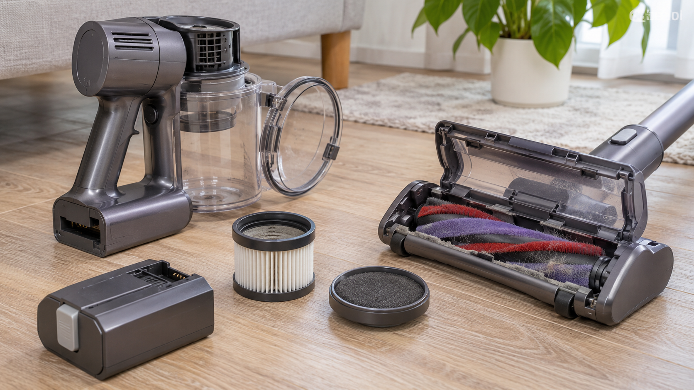

무선청소기에서 탄 냄새가 나면 즉시 전원을 끄고 충전기에서 분리하세요. 브러시 감김이나 막힌 필터로 과열될 수 있지만 배터리 변형·연기·화학 냄새가 있으면 재사용하면 안 됩니다.
| 위치 | 확인 |
|---|---|
| 바닥 헤드 | 브러시 감김·벨트 마찰 |
| 본체 배기구 | 필터 막힘·모터 과열 |
| 배터리·충전기 | 즉시 사용 중단 |
젖은 필터를 장착하거나 배터리를 분해하거나 다른 충전기를 사용하지 마세요.
냄새가 재발하거나 배터리가 붓고 뜨겁거나 금속음이 나면 중단하세요. 흡입력 저하 해결법과 배터리 점검법도 참고하세요.
제품별 차이가 있으므로 제조사 공식 사용설명서와 고객지원 안내를 우선 확인하세요.